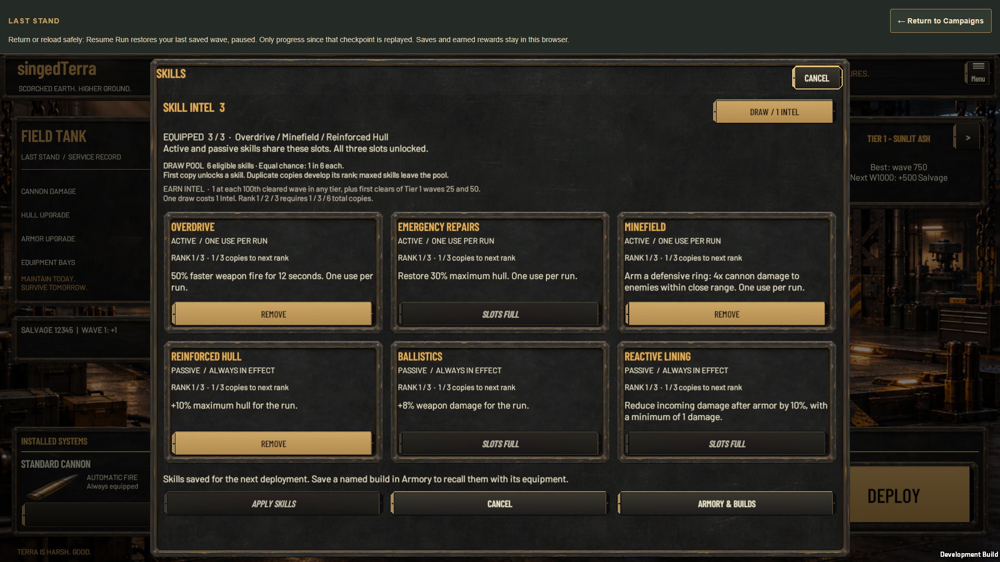
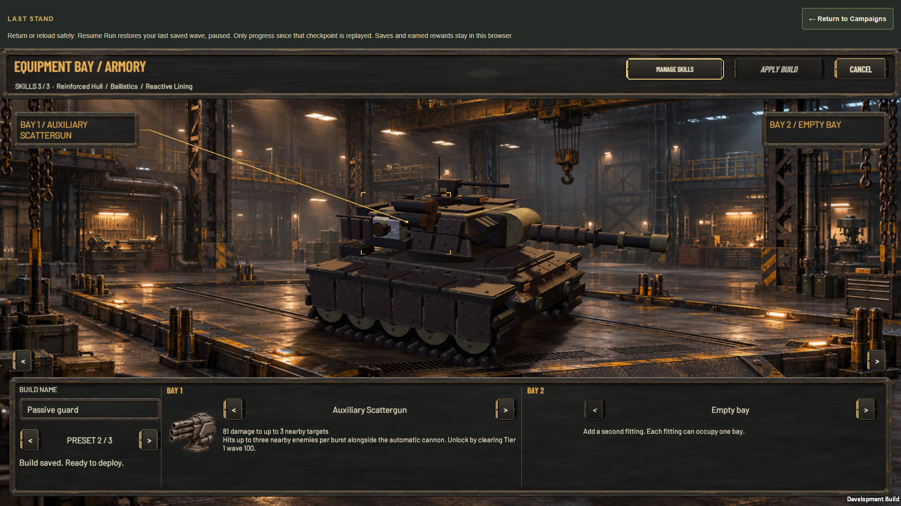
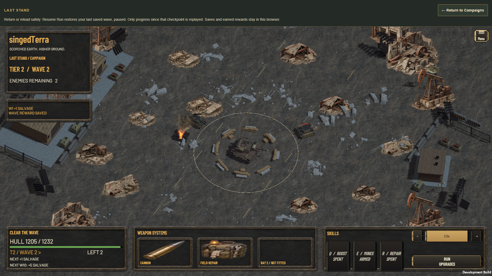
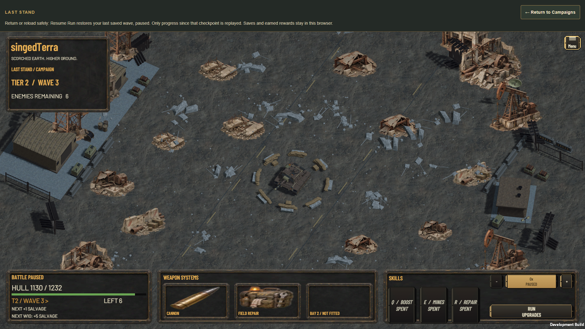
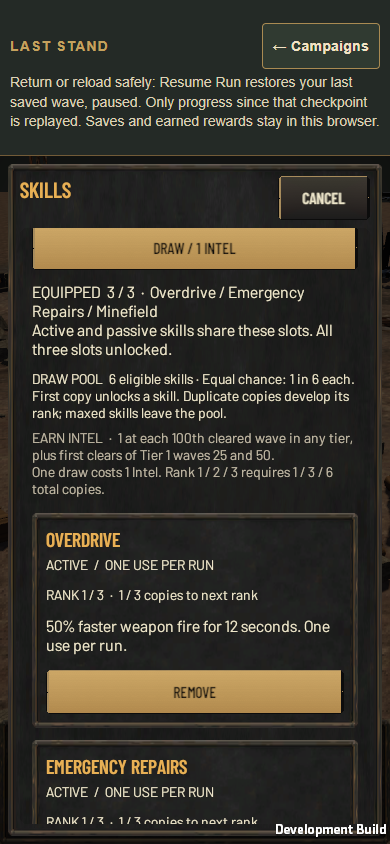
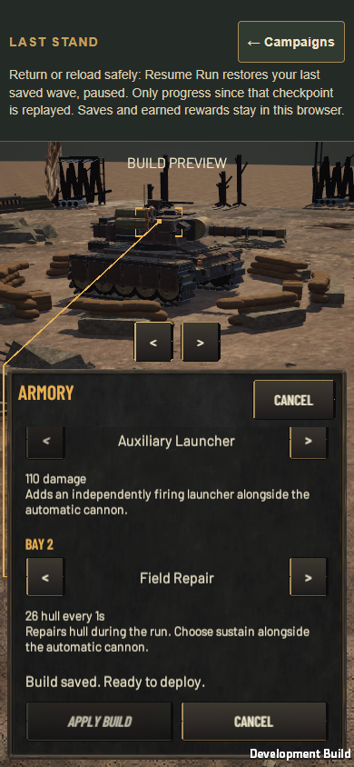
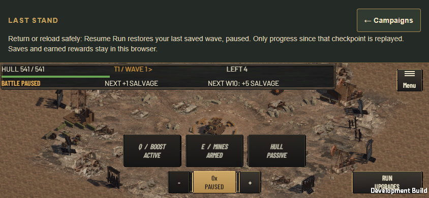
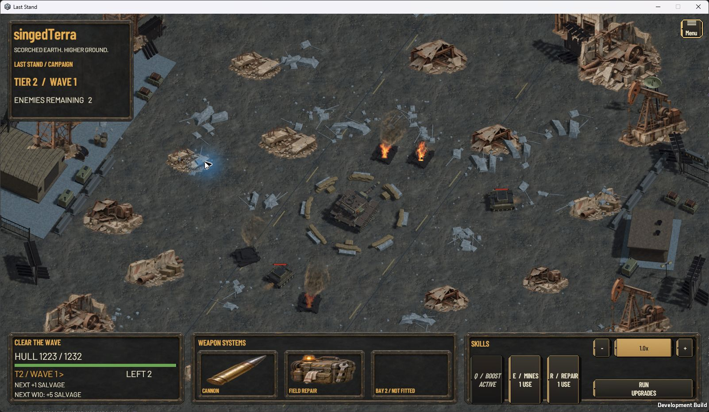
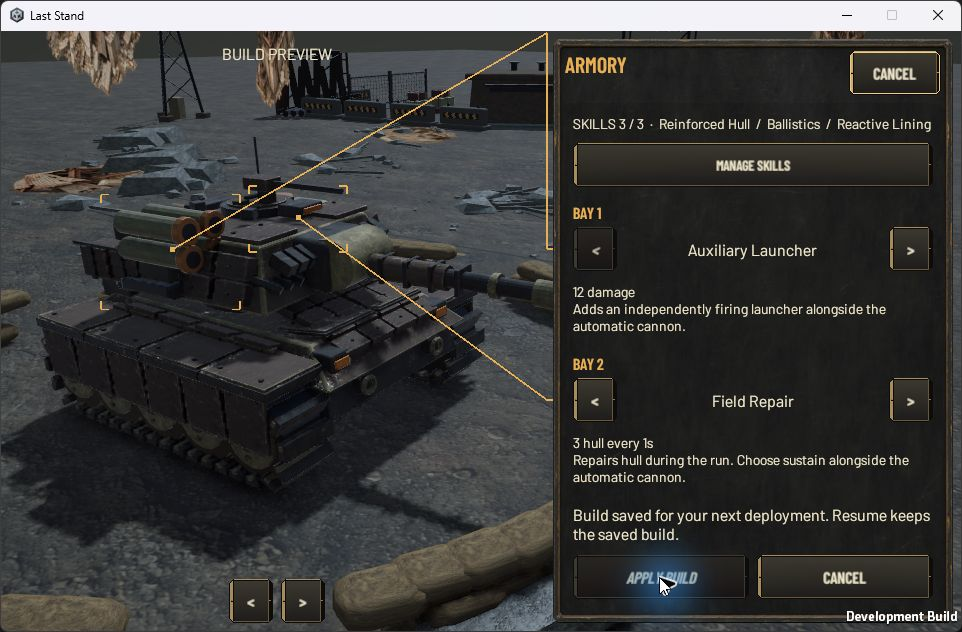
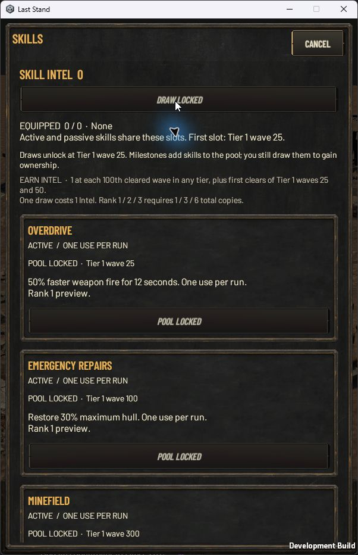

Collection & builds
Six skills, three ranks and up to three shared slots. Eligible skills become owned after a draw; maximum-rank skills leave the pool. Named builds recall equipment and skills together.
Earn Skill Intel, draw eligible skills, develop duplicate copies and combine active or passive skills in shared slots. Save skills with an Armory build, then use limited interventions during combat while passive bonuses stay attached to that deployment.
Browser journey fixes verified locally; hosted verification pendingSix skills, three ranks and up to three shared slots. Eligible skills become owned after a draw; maximum-rank skills leave the pool. Named builds recall equipment and skills together.
Overdrive, Emergency Repairs and Minefield each have one use per run. Reinforced Hull, Ballistics and Reactive Lining apply passive benefits. Cards and Q/E/R address the equipped slots.
Deployment captures ranks and equipment. New draws and preparation do not refill the current run. Resume restores the confirmed wave; an unfinished wave and its spent uses roll back together.
These are actual screenshots from the current completed packaged Web journey. Collection and combat use separate disclosed development fixtures; gifted prior strength, baseline repair and seeded history do not establish earned balance. Native observations are recorded below; device performance and owner concept-fidelity acceptance remain separate.







The same final Windows executable was exercised at 1600×900, 960×600 and 600×900 with ordinary mouse, keyboard and scroll input. The user cleared the earlier firewall prompt; no Windows security settings were changed. Three isolated player processes were closed with Alt-F4 and their absence verified.
The journey covers a one-Intel draw, cancelled mixed draft, shared capacity, Apply, named equipment-and-Skills builds, keyboard Overdrive/Minefield and pointer Repairs, full-hull and modal refusal, active-to-expired and armed-to-spent states, paused checkpoint restart, future-build isolation, passive play and a fresh locked collection. One early repair click found hull already restored by baseline repair and did not consume a use; the later damaged-hull click was accepted. This is representative manual interaction with declared development fixtures, not an earned pacing experiment.
The committed wave-2 checkpoint retained tick 1,525, hull 1,220 and spent mask 7. Changing the future build left its serialized checkpoint byte-equivalent; Resume restored the captured active build paused, despite the selected passive future build. Six normal save files remained unchanged. No numeric coverage, device performance, audible-audio or owner concept-fidelity acceptance is claimed.
Local evidence: 50 actual actions · integrity and 16 capture hashes · process closure · independent native review.



Build, receipt and Evidence links are local to this worktree. Versioned screenshots below can travel with a PR; raw saves, logs and binaries are not copied.
LastStand-windows-20261112T012736Z-f3d9c7
Exact source-bound build receipt
Both builds bind source c9069ab77c20894ed9d02be07dcc1cfc862ad4bb93f3b25ce6808f1862adcb2b. Historical full Skills browser receipt. Retained native integrity record. The earlier security-prompt handoff is retained as history; the user subsequently dismissed the prompt.
The separate wrapper refresh receipt binds the authored index and manifest update; that earlier refresh preserved all 17 Unity runtime files and the native candidate. The later browser CI repair below rebuilds the Web runtime.
Hosted run 43263332826 passed eight full gameplay viewport journeys in 33–59 minutes. Two others were terminated by Playwright's overall 60-minute limit while making valid progress. The wide viewport committed its Cannon Attack purchase 13.7 seconds before termination; the standard viewport had reached its upgraded-run background checkpoint. These incomplete artifacts remain failures.
The centralized Linux functional budget now allows up to 120 minutes, with the existing startup and owned-process cleanup margins derived from it. Windows remains at 40 minutes. All individual action, eight-second observation, input, model, geometry and sandbox checks remain intact. The bounded workload comparison records the choice and resource tradeoff. Three existing budget/owner regressions were observed RED, then the 12 targeted checks, 534 policy tests and 170 focused tests passed. This allowance is not a measured completion estimate or a device-performance claim; fresh hosted completion is still required.
The fifth viewport journey retained a matching model and session pair only 46.7 ms before its first sampled clock. The observer unnecessarily requested another clock before inspecting that pair; delayed browser responses aged it past the freshness allowance and consumed the wall deadline. It now evaluates the first sample immediately. The one-second pre-request freshness allowance, eight-second page and wall deadlines, document/run bindings and matching counters remain unchanged.
The targeted regression failed before correction and now passes alongside the stale, foreign, contradictory and overdue-pair checks. The current combined tree passes 534 policy tests and 170 focused tests. Retained artifact replay is distinct from the pending replacement hosted run.
The first viewport journey reached natural defeat while the driver captured keyboard focus before sending Enter. Its retained input and runtime timeline shows four completed waves before this sequence and no final Enter before defeat. The driver now waits for the actual earned-wave condition without an additional 16-second delay. During live keyboard Pause, it validates current selection, focus and full control geometry, observes the single activation, then takes the screenshot. Paused Resume and other keyboard actions retain their prior capture order.
The two timing regressions were observed RED and then GREEN. The 533 policy cases and 169 focused cases pass. This is test-driver and verification work; the current Unity package and historical native evidence retain their identities.
Run 43251922328 on 3495c1e3 passed the tier/checkpoint journey and general suites, then exposed an entry-test assumption: a funded saved run opens in the workshop, where the primary Resume Run control is Redeploy. The corrected helper selects the actual enabled control after resizing. The checker retains the exact action sequence and validates checkpoint wallet/run, document identity, geometry and the native pointer timestamp.
Both wrong-control regressions were observed RED before correction. The 531 policy cases and 71 focused cases pass. Retained hosted-observation replay selects the real workshop control and rejects five invalid variants; its resize and pointer adapters are inert, so this is not a new browser input pass. Independent mutation checks reject 13 deliberate faults. The Unity package remains unchanged.
Hosted run 43242487483 passed the tier/checkpoint journey and the general suites, then exposed four later Campaigns failures. The current correction is committed as 2ba8e3ad2d844b21ebb918ce44588140598762df.
529 policy tests and 96 qualification cases passed. Targeted save, pair and cannon regressions retain RED/GREEN, and three observation guard mutations are rejected. Imported renderer RED became GREEN. The combined independent review has no remaining findings.
The new Web-20261112T152213Z-94202e build has a source-bound receipt. The same actual software-rendered probe reports HDR errors on all three old loads and zero console/page errors on three new loads; all 18 served leaves remain bound and unchanged before/after. The wasm is unchanged; renderer data changed.
This is focused Web proof. A broader Windows Background check timed out in the unchanged native foreground driver after the pure pairing checks; the failure is retained, and no new native pass is claimed. Earlier full Skills/native journeys below keep their original builds. The binary text-review exception is logged. Three earlier sprint-history additions remain local because pre-existing non-UTF-8 history prevents committing that file.
The failed run on revision 0adefdc9 exposed two independent failures. The ordinary journey expected an obsolete number of runtime files. The tier journey received modal scroll distances in internal layout units instead of screen units when the modal density exceeded one.
| Repair | Verification | Boundary |
|---|---|---|
| Current export inventory | Compare exact runtime membership and hashes against the genuine build receipt; compare served files against the current manifest. | Missing, extra, modified and drifting files still fail. Historical archive readers retain their original inventory rules. |
| Modal scroll measurements | Convert all modal offset and maximum values with the density actually used for layout. The nonmodal shop stays unchanged. | The regression exercises eight panes, three viewport sizes and three root scales: 72 configurations and 144 start/end captures. Research detail selection and its compatibility alias are exercised. |
| Local tests and review | 524 affected policy tests passed; actual imported RED then GREEN; independent review has no remaining findings. | The 72 configurations are not 72 separate tests. Passing these checks does not establish numeric code coverage or hosted CI. |
| Rebuilt Web player | Web-20261112T141542Z-cf81a0; source-bound build receipt; actual browser resize and End-key check: nine samples, zero errors. | 1920 to 1366 to 1920 width, unchanged geometry checks, and Settings Back fully visible after actual End input. The original full Skills Web journey and native player were not rerun for this new source closure. |
| Delivery gate | Source and packaged bytes are committed and checked. The user approved the disclosed text-review limitation for the genuine Unity .data and .wasm files; two scoped audit entries record the exception. | The producer bounds old and new binary content to 200 MB per candidate, so the prepared update used two audited commits. Both hooks and staged secrets scans passed. This exception does not establish a binary security-review PASS. Replacement exact-head CI remains pending. |
The new build binds source closure f3b3bdad46f688b24cbac871ecbb32f77c65bc7a5f0b81250d1802b32ade249f. The earlier wait-only resize hypothesis was disproved by the actual browser and removed; its diagnostic records remain historical. Earlier images and full gameplay results on this page retain their original build identities.
| Layer | Observed evidence | Scope |
|---|---|---|
| Portable suite | 89 portable modules; failed=[] | Actual retained local suite output. Registry totals are not executed-test or coverage percentages. |
| Later journey guard check | 1 Python wrapper / 5 Node cases passed | Focused rerun after the 89-module aggregate. It checks exact activation audio, fresh-state witnesses and negative guards; no newer full-aggregate run is implied. |
| Skills domain | Collection: 9 tests. Combat: 10 tests. Earned acquisition: 2 tests. | Observed local commands; acquisition repeats production transactions. The paid-upgrade combat case checks actual Scrap debit, fixed armed-mine damage and restored state. |
| Production guard mutations | 4 baseline cases passed; 6 compiled mutants killed | Missing draw debit, resampling, repeated active use, forged states and repriced mines are caught. Temporary copies; production inputs remain unchanged. |
| Imported Unity controls | 7 Skills UI pass markers | Collection, save retry, named builds, Help, responsive controls, deployment/resume and reconciliation-safe clickable controls. Imported checks are not physical-device proof. |
| Empty Armory bay | Behavioral RED02 → 6 imported GREEN markers | An empty second bay no longer borrows another fitting's illustration. Regression exercises empty → equipped → empty and resize. Focused independent review found no new issues; final player verification remains separate. |
| Garage regression | 20 bay pass markers | Nine viewport control checks, grounding, reversible scene state, camera-first and receiver-first cleanup. |
| Bundled font provenance | Barlow 1.422, commit 697600fcece1685b0ba409eb82868546def9a84e | Current font hashes and upstream attribution; SIL OFL is distributed in Resources. Root reports the dependency review passed with no high findings. |
| Web focus contracts | 5 generated-wrapper tests passed; existing focus suite 30/30 passed | Wrapper tests retain 24 prior scene/listener combinations and pointer/keyboard distinctions. Root observed the 30-case command directly; no separate raw process log was retained. Actual packaged input is reported separately. |
| Numeric code coverage | Unmeasured for C# and Python. | No statement, line or branch percentage is claimed. Passing tests and mutation controls are distinct evidence. |
| Hosted / release | Previous hosted run failed; replacement exact-head CI is pending. PR #559: open. Merge/publication: not performed. | Local build receipts do not establish hosted checks, approval or deployment. |
Earned and spent through five normal deployments from a fresh profile.
All requested Tier 1 milestones reached: 25, 50, 100, 300 and 500.
Modeled active time at 1x. No research, closed time or gifted currency.
The fixed disclosed draw seed ends with all six skills owned, Overdrive at rank 2, the other skills at rank 1 and three earned slots. Salvage reconciles: 2,876 earned = 770 invested + 2,106 wallet. The policy makes 822 automated run purchases and excludes menu/decision time; this is not a typical-human pacing or real-duration endurance claim. Acquisition interpretation · source-bound results.
A separate 18-row combat study compares no skills, three passives and three actives under disclosed laboratory seeds. It shows limited interventions improving near-failure outcomes and persistent passives helping sustained windows. Those seeds do not establish earned progression or final global balance. Combat comparison · source-bound results.
All three measured reports preserve actual input-byte hashes alongside explicitly labeled LF-normalized source bindings. The normalization permits cross-checkout comparison without replacing the raw evidence.
The evidence generators now use the repository-approved Node checksum helper. The five adapter tests and two acquisition tests passed; regenerated balance, acquisition and guard results preserve the prior measured outcomes. The original player-test fixtures remain unchanged. Regenerated normal profiles differ only in their production research timestamp; the derived combat profile and preflight match exactly.
Browser attempt 12 retains its original generator binding. The tooling parity record qualifies that one changed input; the other 40 inputs, all 22 packaged bindings and the Unity build inputs remain unchanged. Local review evidence: security review. These local evidence links are not distributed in the PR.
Real application failures are separate from observer and fixture mistakes. All failed attempts remain retained; a passing subset never becomes full journey acceptance.
| Attempt | Classification | Observed result |
|---|---|---|
| Browser 01 | harness | Before browser launch: obsolete fixed package count; genuine receipt has 17 entries. Observed 0 passing checks; terminal failed. |
| Browser 02 | runtime | Stripped MeshCollider request opened a Development Console overlay. Rendering-only owned mesh corrected it. Observed 3 passing checks; terminal failed. |
| Browser 03 | harness | Armory geometry assumed desktop header actions belonged to a scroll viewport. Observed 3 passing checks; terminal failed. |
| Browser 04 | harness | Assumed preset 0; actual UI correctly preserved named builds and used empty slot 2. Observed 3 passing checks; terminal failed. |
| Browser 05 | harness | Assumed catalog order; actual equipped order deliberately places Minefield before Repairs. Observed 4 passing checks; terminal failed. |
| Browser 06 | harness | Actual Overdrive cue included one Unity terminal newline; exact normalization corrected the assertion. Observed 5 passing checks; terminal failed. |
| Browser 07 | harness | Immediate assertion raced the already-correct selected-loadout observation. Observed 3 passing checks; terminal failed. |
| Browser 08 | harness | Receipt predicate expected Saved. at the start instead of its actual suffix. Observed 1 passing checks; terminal failed. |
| Browser 09 | fixture | The declared 180-second wait ended at Tier 2 wave 25 with full 492 hull. Strong collection fixture was unsuitable for real-damage timing. Observed 7 passing checks; terminal failed. |
| Browser 10 | runtime | Twelve checks passed, then actual portrait touch activation failed because HUD projected while Session was reconciling. Portrait Armory also showed lines extending to clipped labels. Observed 12 passing checks; terminal failed. |
| Browser 11 | runtime-wrapper | Fourteen checks passed, including portrait pointer actives and corrected callout routing. In short landscape, return from wrapper title to the correctly revealed Apply target caused canvas focus to send keyboard enter-first, moving scroll from468 to80 between pointerdown and pointerup. The action did not fire; focus-diagnosis.json retains exact input/layout evidence. Observed 14 passing checks; terminal failed. |
| Browser 12 | player_verification | Current actual player verification Observed 21 passing checks; terminal pass. |
The pointer defect has targeted imported RED and seven-case GREEN. The guard still refuses input during reconciliation; HUD availability refreshes after the completed callback.
Compact Armory callout visibility/routing: targeted RED and GREEN. Final Web captures show the current actual layout.
Pointer refocus in the Web wrapper: actual generated-HTML RED and five-case GREEN. Pointer focus preserves the target geometry; keyboard entry and subsequent Tab remain intact. The wrapper refresh leaves the Unity and native candidate bytes unchanged.
The equipment-bay review completed on November 10, 2026 and is retained separately: implementation verification and review integrity. That source digest begins 4d4c5283, with 44 review links, nine primary native captures and six normal profiles unchanged. It records bay/Armory/gameplay inspection at 1600×900, 1920×1080 and 3440×1440. This older evidence supports the prior UI work; it does not qualify the current Skills build or its new input flows.
2ba8e3ad and the subsequent Return/resume and keyboard-pause corrections are locally verified; replacement exact-head hosted CI remains required.